Performance testing of the Ubuntu Server VM, identification of bottlenecks, and reflection on virtualisation-related trade-offs.
This phase executes detailed performance testing of the Ubuntu Server and analyses operating system behaviour under different workloads, using the workstation–server dual VM setup and remote administration via SSH.
For each application or service chosen, the following metrics were selected, monitored and compared where appropriate:
For each application or service chosen, the following scenarios were considered, monitored and compared where appropriate:
Week 6 of the operating systems coursework focused on evaluating the performance of my Ubuntu Server virtual machine in line with Phase 6 of the assessment brief. The aim was to understand how the operating system behaves under different workloads and to analyse the limitations and trade-offs introduced by the virtualised environment. All administration of the server was performed remotely from a separate Ubuntu Desktop workstation over SSH, as required by the dual-system architecture.
The specific objectives were to establish a clean performance baseline, apply CPU, disk and network workloads, collect quantitative metrics, attempt performance optimisations, and critically interpret the results with respect to the underlying hardware and virtualisation layer.
The environment consisted of two VirtualBox virtual machines: an Ubuntu Desktop workstation and a
headless
Ubuntu Server. The server exposed a host-only network interface on the 192.168.56.0/24 network, while
the
workstation acted as the SSH client and performance test driver. IP addressing was verified using
ip addr on both systems, confirming connectivity between 192.168.56.10
(workstation) and 192.168.56.102 (server).
Before running any workload, I established a baseline using:
uptime – load averages and system uptimefree -h – memory utilisationdf -h – disk usage of mounted filesystemstop -b -n 1 – non-interactive process snapshotThese measurements showed an idle system with negligible CPU usage, low memory consumption and ample disk space. This ensured that later changes could be attributed to the test workloads rather than background activity.
Performance evaluation then proceeded in three main phases:
stress-ng.dd.ping and iperf3.The baseline captures how the operating system behaves in an idle state:
uptime reported load averages of
0.00, 0.00, 0.00, confirming no prior CPU stress.
free -h showed approximately 9.9 GiB RAM in total, with
just
over 500 MiB in use and more than 8 GiB available.df -h indicated that the root filesystem was around 40%
utilised,
leaving enough space for benchmarking.top -b -n 1 showed that the majority of CPU time was spent
in
the idle state, with only system daemons and SSH sessions running.To exercise CPU scheduling and utilisation, I used:
stress-ng --cpu 4 --metrics-brief
This command attempts to run four CPU stressors concurrently and report bogo-operations as a crude
measure
of throughput. In practice, all runs of stress-ng terminated with error status 2 and
reported
zero bogo-ops, accompanied by warnings that metrics might be incorrect. Despite this, top
clearly showed the CPU cores becoming heavily utilised while the stressors were running, and the server
remained reachable over SSH without crashing.
The most plausible interpretation is that VirtualBox’s handling of virtual CPU performance counters and
timers prevented stress-ng from completing its benchmarks reliably. The CPU workload was
applied successfully, but the tool could not produce meaningful quantitative metrics within this
virtualised environment.
Disk write performance was evaluated using the standard dd benchmark:
dd if=/dev/zero of=testfile.img bs=1G count=1 oflag=direct
This command writes a 1 GiB file using direct I/O. The benchmark was executed on both the workstation VM and the server VM.
| System | Measured write speed |
|---|---|
| Workstation VM | Approximately 261 MB/s |
| Server VM | Approximately 2.1 GB/s |
The server’s result is clearly unrealistic for the underlying physical storage. It can be explained by VirtualBox aggressively caching writes in host memory for the server VM, while the workstation VM runs a full desktop environment and competes for resources.
Network latency between the workstation and server was measured using:
ping -c 10 192.168.56.102
The results showed 0% packet loss and average round-trip times of roughly 0.5 ms, typical of a host-only virtual network where both endpoints reside on the same physical machine.
Throughput was tested with iperf3, with the server in server mode and the workstation as
client:
# On server iperf3 -s # On workstation iperf3 -c 192.168.56.102
Across multiple runs, iperf3 reported average bitrates in the region of
2.8–3.1 Gbit/s.
However, each test also showed a high number of TCP retransmissions, often between 7,000 and 11,000
segments for a 10-second test, and congestion window sizes fluctuated between roughly 170 and
245 KB.
The combination of very high throughput and high retransmission counts indicates that the virtual NIC and internal switching layer within VirtualBox are the main sources of network bottlenecks rather than the Linux TCP/IP stack.
Within the constraints of the virtualised testbed, I focused on the Linux network stack, as this was the area with clear quantitative anomalies.
I examined socket buffer settings using:
sysctl net.core.rmem_max sysctl net.core.wmem_max
Both parameters were already set to 212992. I then attempted to set them explicitly:
sudo sysctl -w net.core.rmem_max=212992 sudo sysctl -w net.core.wmem_max=212992
Subsequent checks confirmed that the values remained unchanged at 212992. A repeat
iperf3 test after this attempted optimisation produced throughput and retransmission
statistics
that were essentially identical to the baseline run, demonstrating that network performance was
constrained
by the virtual NIC rather than Linux socket buffer sizes.
Combining results from CPU, disk and network tests leads to the following overall assessment of system bottlenecks:
stress-ng to produce metrics appears to stem
from
VirtualBox’s handling of performance counters and timing, not from the Ubuntu scheduler.
The experiments confirmed that while command-line tools such as stress-ng, dd,
ping and iperf3 are powerful for understanding OS behaviour, their outputs
must be
interpreted in the context of the underlying platform. In a fully virtualised environment, the
hypervisor
can distort CPU metrics, cache disk writes aggressively and implement networking via virtual switches
that
behave differently from physical networks.
Apparent performance values may therefore reflect the efficiency of the virtualisation layer rather than the intrinsic performance of the Linux kernel or its configuration. The optimisation attempts around network buffers reinforced this point by showing that tuning within the guest OS cannot overcome limitations imposed by VirtualBox’s implementation.
The Week 6 performance evaluation met the key requirements of Phase 6 in the assessment brief: it documented a clear testing methodology, captured baseline and under-load metrics, attempted optimisation of network parameters and critically analysed the resulting data. The main conclusion is that the Ubuntu Server installation is stable and responsive under the tested workloads, and that most apparent performance anomalies are attributable to VirtualBox’s handling of CPU counters, disk caching and virtual networking rather than to weaknesses in the operating system configuration itself.
The following figures and charts provide evidence for each Phase 6 deliverable.
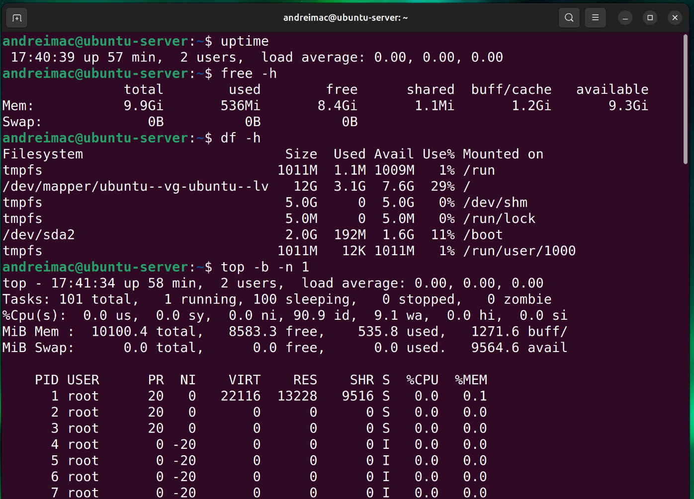
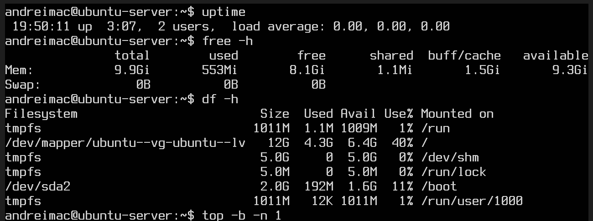
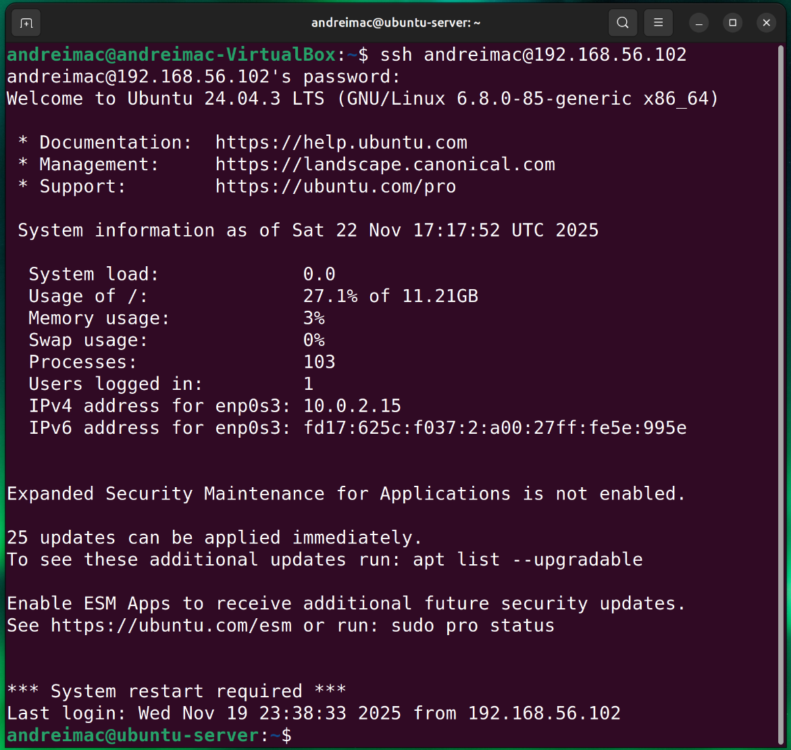
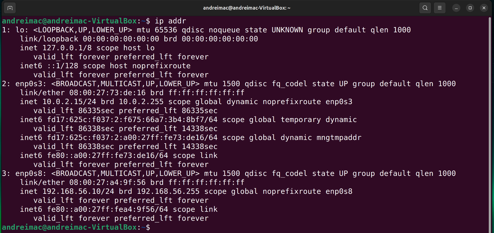
ip addr on the workstation, showing the host-only address
192.168.56.10/24 used for testing.
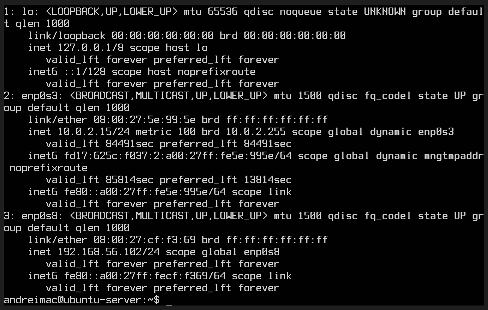
ip addr on the Ubuntu Server console, showing the host-only address
192.168.56.102/24.
The disk I/O performance table in Section 5 is supported by the following write benchmarks using
dd on both VMs.
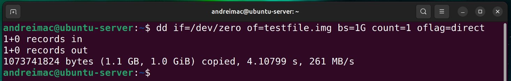
dd benchmark on the workstation VM, reporting around 261 MB/s
write speed.
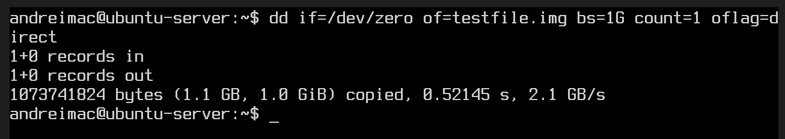
dd benchmark on the server VM, reporting around 2.1 GB/s due to
aggressive VirtualBox caching.
The following interactive charts, built with Plotly.js, aggregate the CPU and network measurements captured in the terminal screenshots and show how utilisation and throughput change under load.
The CPU utilisation chart summarises how busy the server was at three points in the
experiments: almost idle at baseline, noticeably higher during the iperf3
network load, and then dropping back down once the test finished. It shows that even
when stressed, the VM stayed well below 100% utilisation and quickly returned to a
low-load state, which matches the snapshots seen in the top output.
The network chart compares throughput and retransmissions for the two
iperf3 runs. Throughput remains consistently high (around 3 Gbit/s)
while the number of retransmitted segments is also high and very similar across both
runs. This combination supports the conclusion that the virtual NIC / VirtualBox
networking layer is the main bottleneck, rather than TCP tuning inside the Ubuntu
guest.
CLI screenshots in Figures 8–9 provide the underlying evidence for these charts.
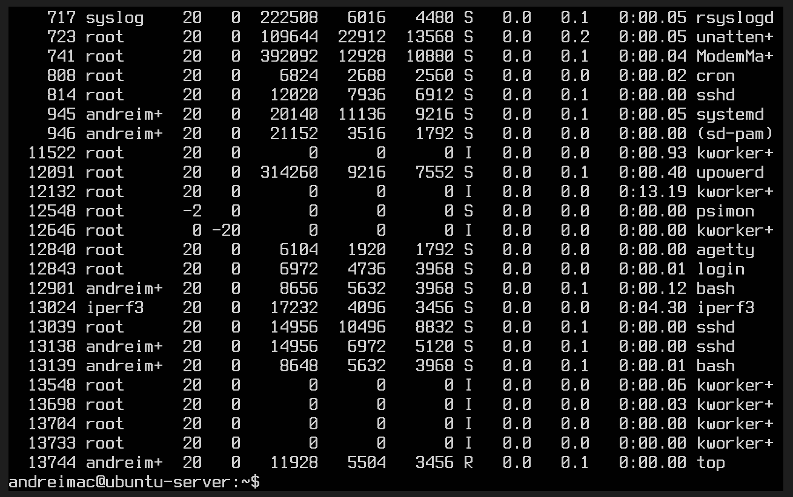
top -b -n 1 snapshot capturing the iperf3 process and
CPU utilisation during throughput testing.
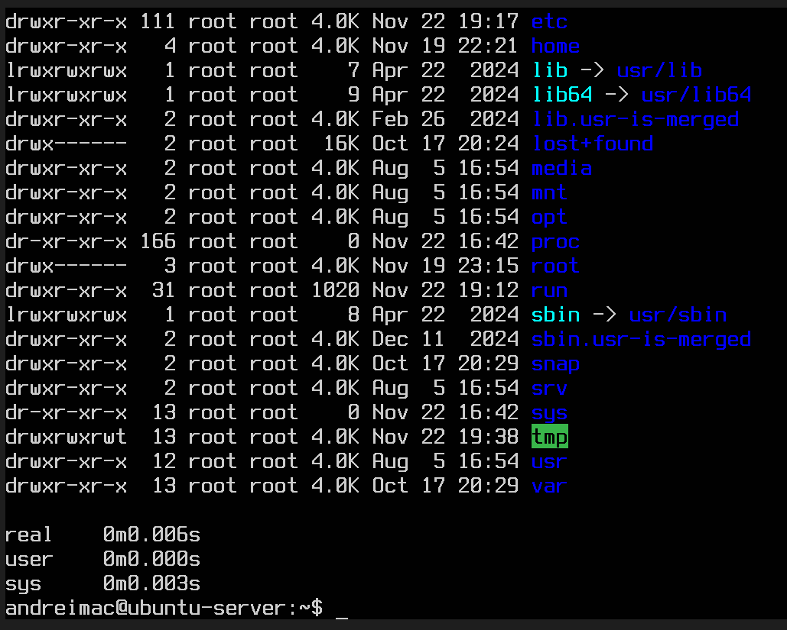
ls executed in the root filesystem (with timing), confirming low
latency for basic filesystem operations.
The following figures show direct terminal evidence of the CPU stress tests and related commands.
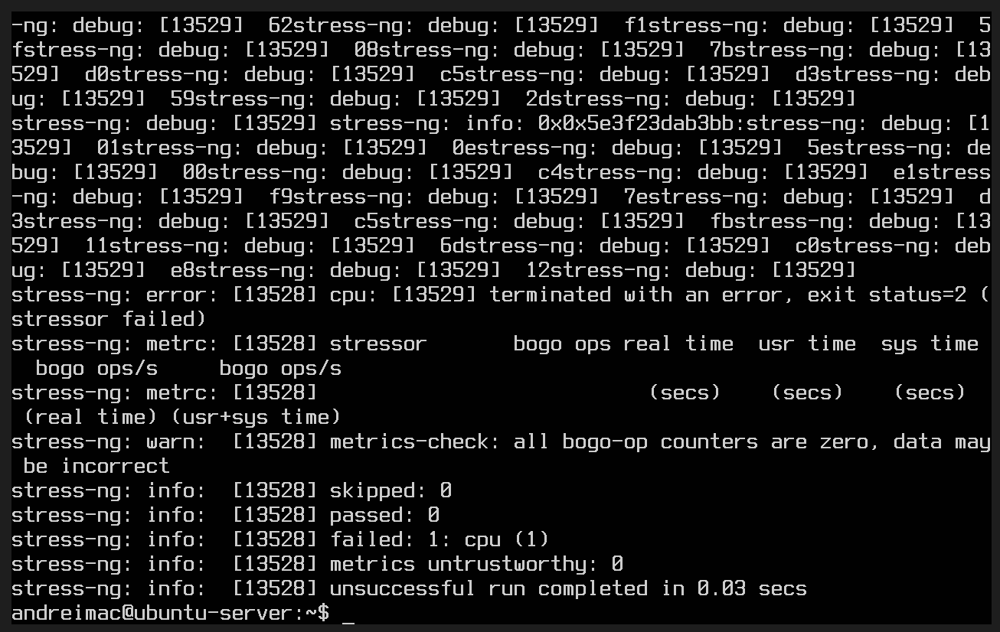
stress-ng --cpu 4 --metrics-brief output (run 1), showing failed
metric collection under VirtualBox despite visible CPU load.
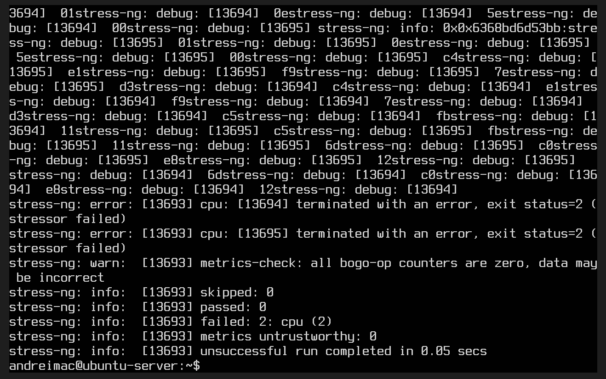
stress-ng --cpu 4 --metrics-brief output (run 2), reinforcing the
same measurement limitations.
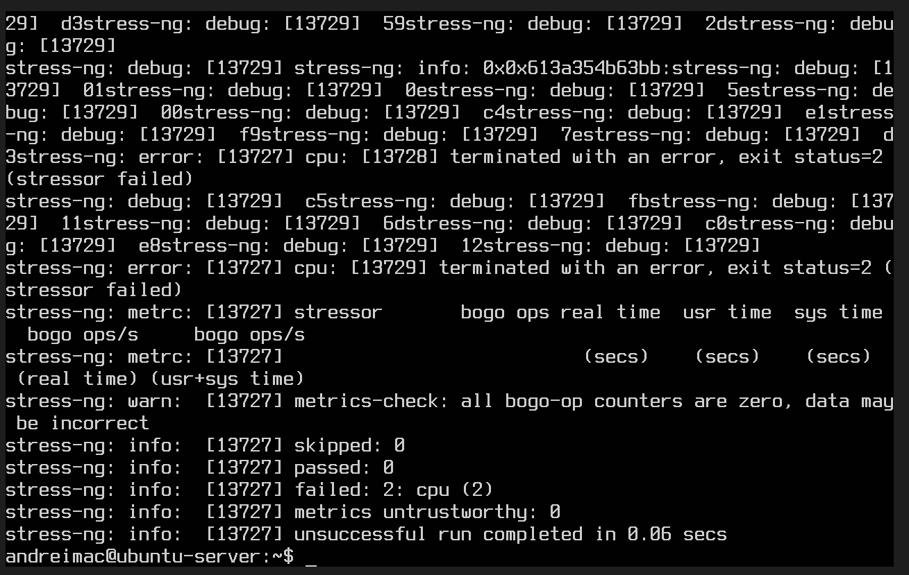
stress-ng --cpu 4 --metrics-brief output (run 3), again confirming
that the workload runs but metrics are unreliable.
Latency and throughput between the workstation and server are evidenced in the following
ping and iperf3 outputs.
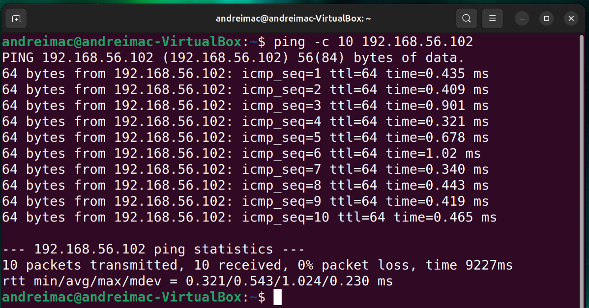
ping -c 10 192.168.56.102 from the workstation, showing low
round-trip times and 0% packet loss.
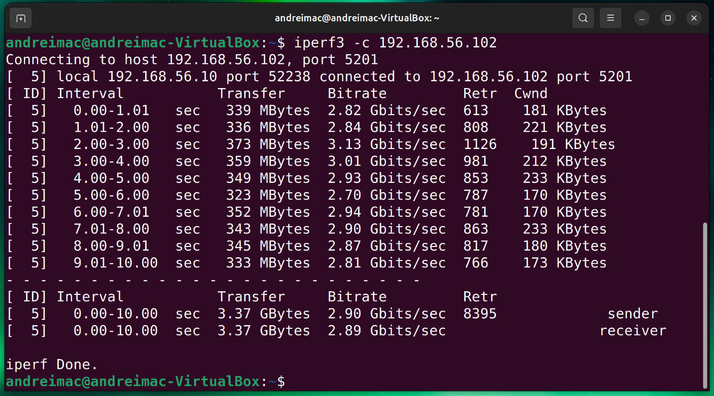
iperf3 test, with throughput around 2.9 Gbit/s and
significant retransmission counts.
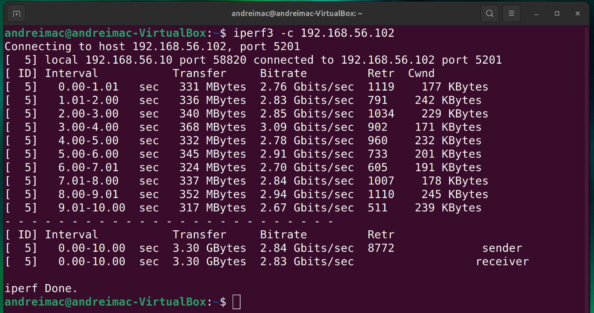
iperf3 run, showing similar throughput and retransmission
behaviour, supporting the analysis of VirtualBox network bottlenecks.
The attempted optimisation of network buffer settings and its impact (or lack of impact) are documented below.
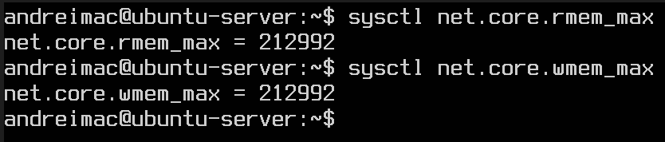
sysctl output showing net.core.rmem_max and
net.core.wmem_max values prior to tuning attempts.
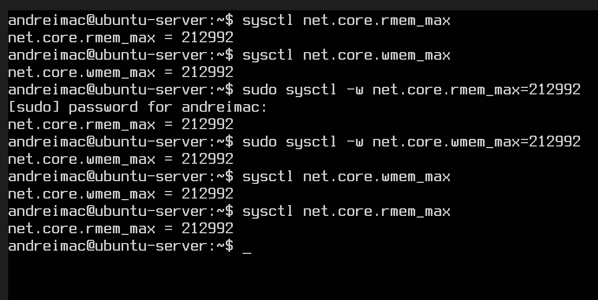
sysctl output after attempting to tune
net.core.rmem_max and net.core.wmem_max – values remained at
212992, explaining why throughput did not change.